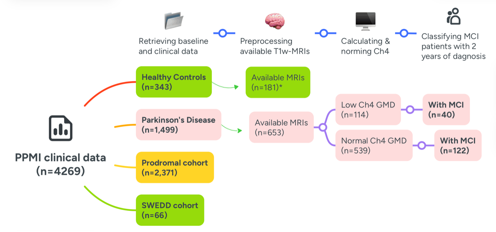
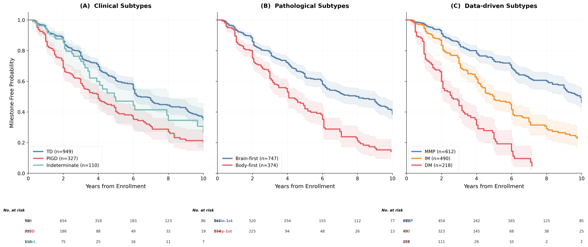
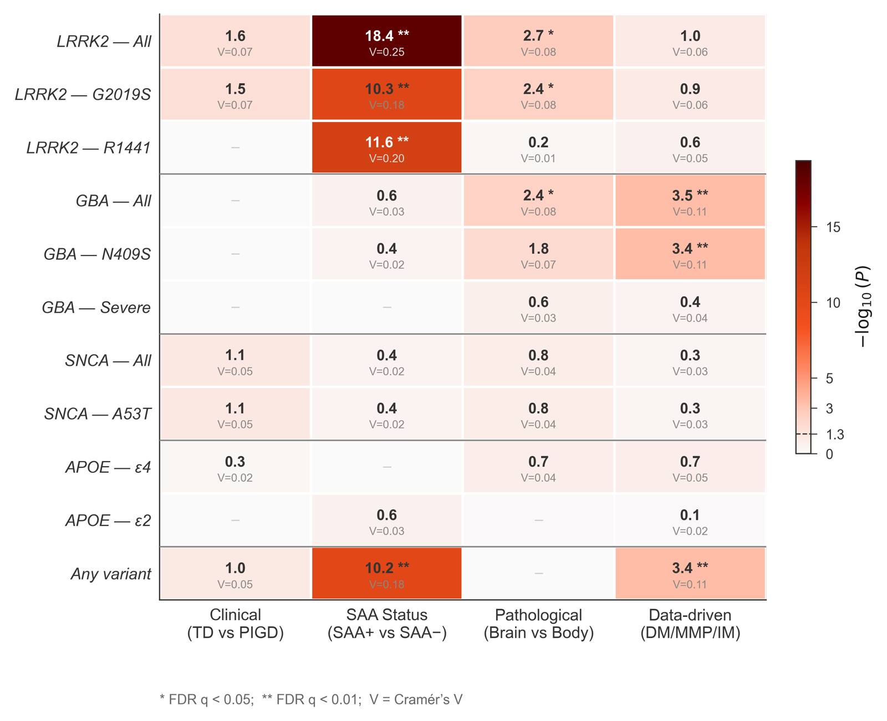
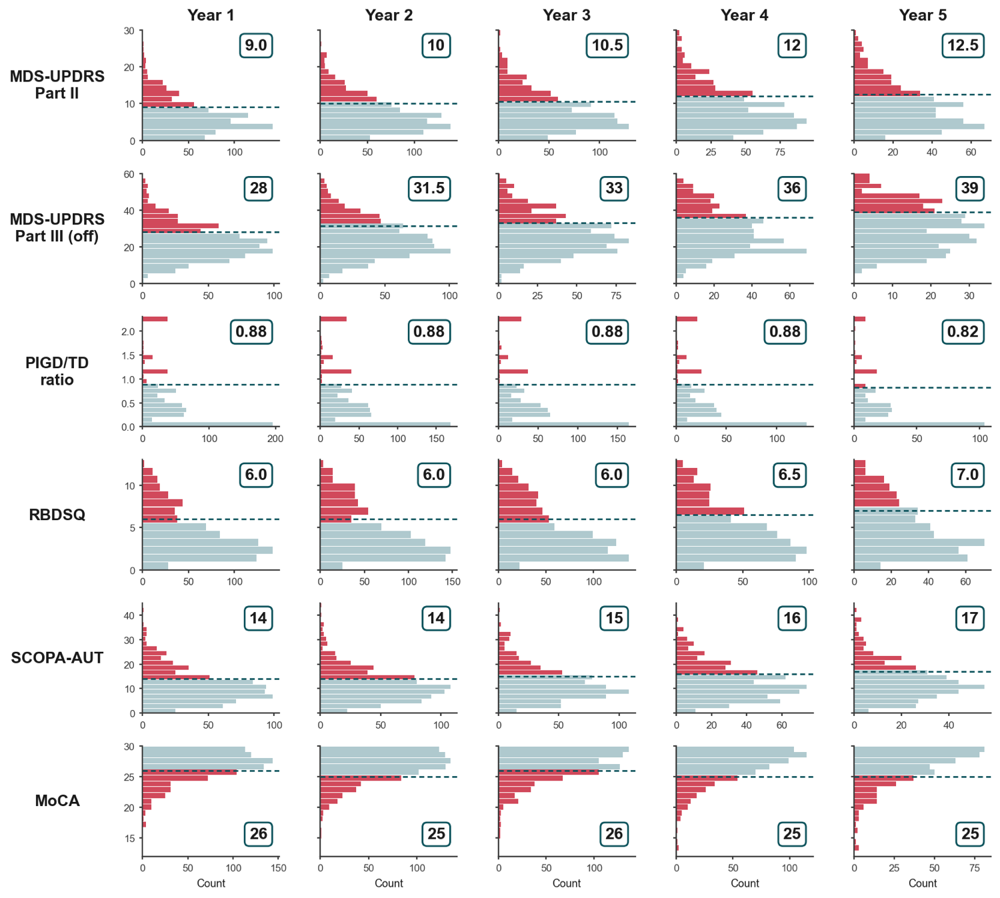
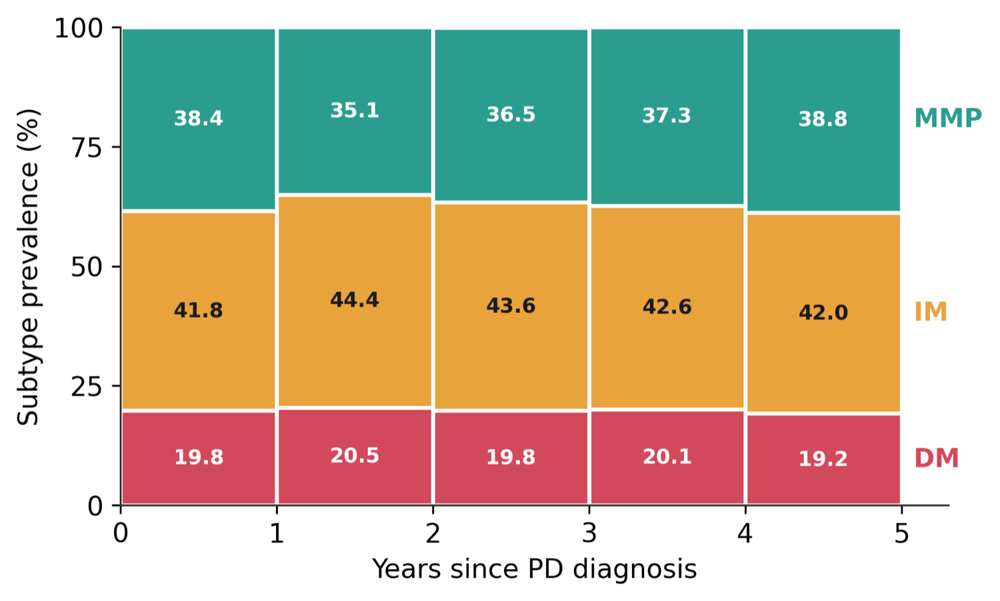
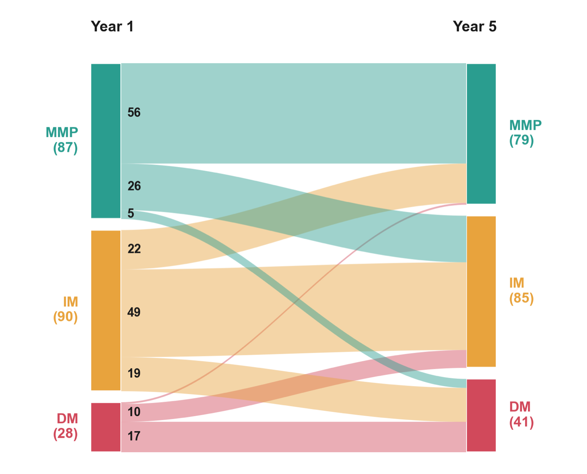
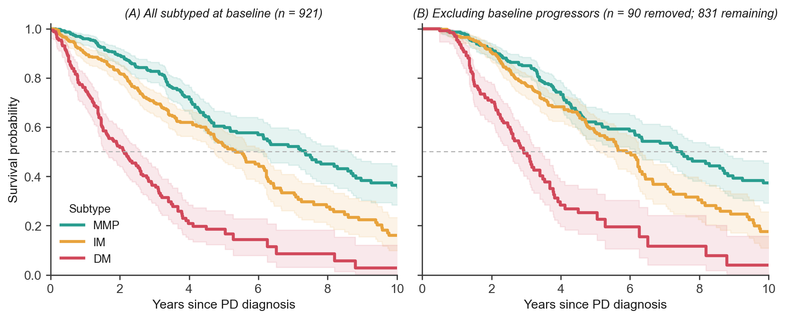
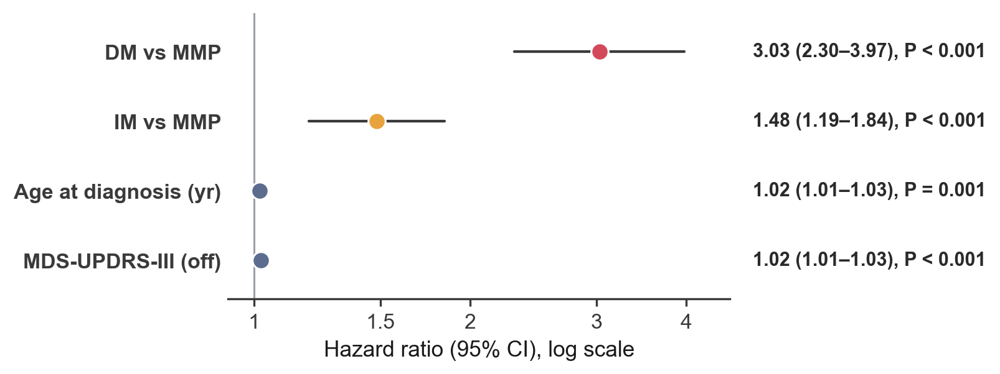

Why subtype Parkinson's disease?
Parkinson's disease is not one disease. Two patients with the same diagnosis can follow radically different courses — one stable for a decade, another in a wheelchair with dementia within five years. Trials that treat PD as a single entity dilute their strongest signals in slow progressors, and disease-modifying candidates keep failing.
My research program asks a deceptively simple clinical question: which patients will progress fastest, and can we identify them prospectively — at the bedside, in real time? The answer that has held up across four studies is a data-driven subtyping framework that sorts patients into diffuse-malignant (DM), intermediate (IM), and mild motor-predominant (MMP) groups, and that consistently separates rapid from slow progressors better than the clinical labels neurologists have used for decades.
The through-line. Start from a cholinergic imaging subtype at the bedside → prove data-driven subtypes progress fastest across a decade → map their genetic architecture → make the model usable prospectively with disease-duration percentiles → ship it as a free calculator anyone can use.
A new PD–MCI subtype defined by cholinergic nucleus 4 degeneration
The program began at the intersection of imaging and cognition. Mild cognitive impairment (PD–MCI) is common and prognostically messy — some patients convert to dementia quickly, others never do. I hypothesized that the difference is anatomical: degeneration of the nucleus basalis of Meynert (cholinergic nucleus 4, Ch4), the brain's principal source of cortical acetylcholine.
Using baseline MRI from 162 PD–MCI participants in the Parkinson's Progression Markers Initiative (PPMI), we measured Ch4 grey-matter density with voxel-based morphometry and probabilistic maps. Patients with low Ch4 density had worse motor and autonomic burden, poorer olfaction, and — critically — progressed to cognitive-decline milestones significantly faster. This became the discovery anchoring an independent research program: PD–MCI with Ch4 degeneration behaves like a distinct, more malignant subtype.

Progression milestones across clinical, pathological, and data-driven subtypes: a 10-year follow-up
If subtyping is going to matter for trials, one framework has to actually beat the others at flagging rapid progressors. So I put three head-to-head over ten years of PPMI follow-up: the classic clinical motor split (tremor-dominant vs. postural-instability/gait-difficulty vs. indeterminate), the pathological brain-first vs. body-first model, and the data-driven DM/IM/MMP model — scored against 25 predefined milestones spanning six functional domains.
The data-driven model won. Diffuse-malignant patients reached the most milestones and carried the highest hazard of progression after adjustment for age. The clinical payoff is concrete: trial simulations showed that enrolling DM patients could cut required sample sizes by roughly half at standard trial durations versus unstratified cohorts — a direct lever on the feasibility of disease-modification trials.

Genetic associations of PD clinical, pathological, and data-driven subtypes
A subtype worth stratifying on should have biology behind it, not just statistics. Across 1,390 PPMI patients genotyped for seven PD-associated genes, I asked which subtyping frameworks map onto genetic architecture. The clinical tremor/gait split showed no genetic signal that survived multiple-comparison correction. The biologically grounded frameworks did: LRRK2 variants were strongly enriched among α-synuclein seed-amplification–negative patients (Cramér's V = 0.25), and GBA1 variants tracked the body-first and diffuse-malignant subtypes.
The message: the data-driven and pathological subtypes carve PD along lines that genetics recognizes — the clinical motor labels largely do not.

Disease-duration–specific percentiles for prospective subtyping of Parkinson's disease
The original data-driven model had a practical flaw: it used fixed baseline thresholds. That works if you have a drug-naive patient at diagnosis — but it cannot classify the patient sitting in clinic three years in, whose scores have already drifted with the disease. To subtype prospectively, the yardstick has to move with disease duration.
So I rebuilt the thresholds year by year. Using 1,030 de novo idiopathic PD patients from the April-2026 PPMI freeze, I computed within-disease-year percentiles for each motor and non-motor scale, so a patient is compared against peers at the same disease duration. The result is a stable, prospective classifier: subtype prevalence held steady across years, and the survival separation was decisive — DM patients progressed three times faster than MMP.





Try it: the interactive calculator
Everything above ships as a free, self-contained web tool. Enter a patient's disease duration and seven routine scores; it returns the subtype, a motor composite z-score, and a channel-by-channel percentile breakdown against same-disease-year peers. No data leaves your browser.
The four papers
Peer-reviewed, first-authored, and openly citable. Each links to its published record.
- Negida A, Vohra HZ, Lageman SK, Mukhopadhyay N, Berman BD, Weintraub D, Barrett MJ. Parkinson's disease mild cognitive impairment with MRI evidence of cholinergic nucleus 4 degeneration: a new subtype? Parkinsonism Relat Disord. 2025;141:108072. doi:10.1016/j.parkreldis.2025.108072
- Negida A, Mukhopadhyay N, Berman BD, Barrett MJ. Comparative analysis of progression milestones across Parkinson's disease clinical, pathological, and data-driven subtypes: a 10-year follow-up. npj Parkinsons Dis. 2026. doi:10.1038/s41531-026-01430-8
- Negida A, Abouelmagd ME, Hamed BM, et al. Genetic associations of Parkinson's disease clinical, pathological, and data-driven subtypes. Genes (Basel). 2026;17(4):449. doi:10.3390/genes17040449
- Negida A, Mukhopadhyay N, Berman BD, Fereshtehnejad SM, Barrett MJ. Disease-duration–specific percentiles for prospective subtyping of Parkinson's disease: a PPMI-based study. Mov Disord Clin Pract. 2026. doi:10.1002/mdc3.70740